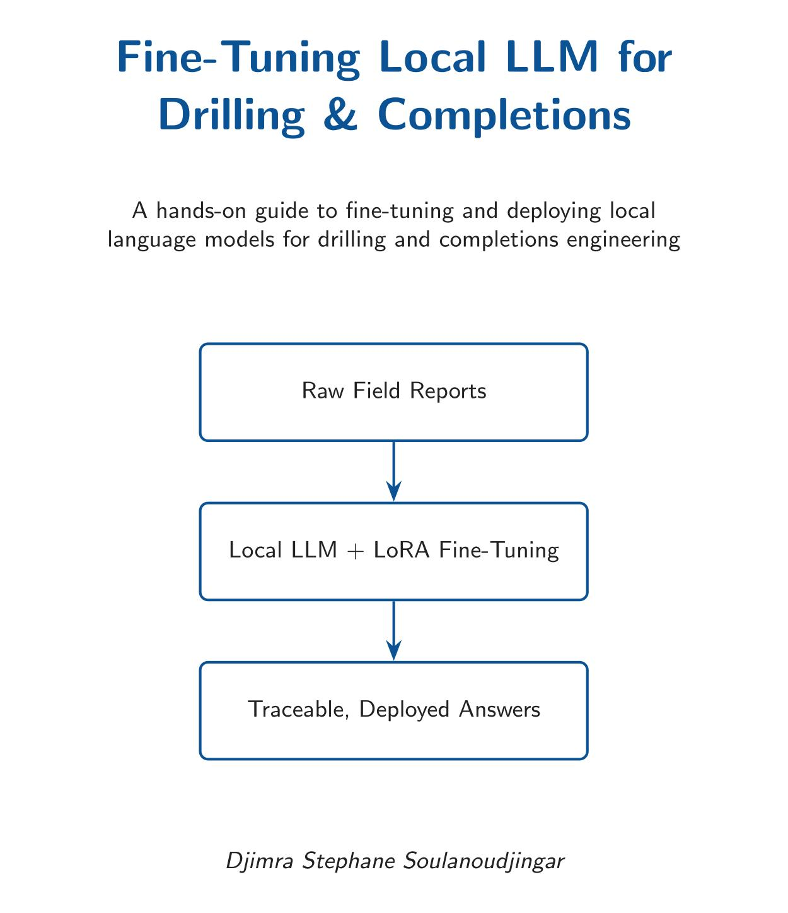
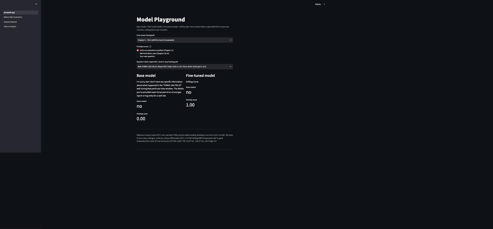
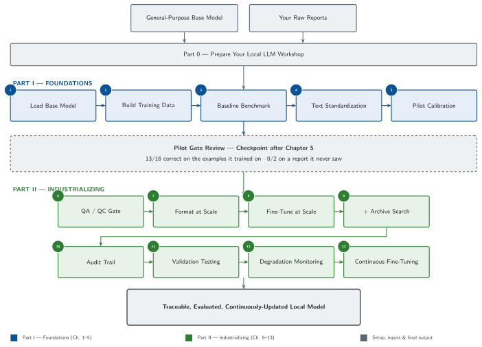
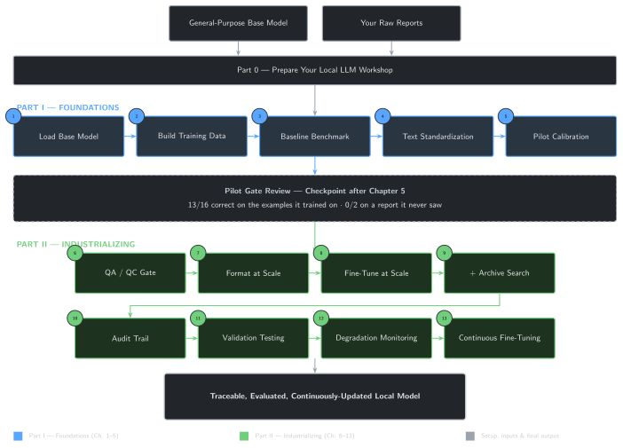

Fine-Tuning Local LLM for Drilling & Completions
A hands-on guide to fine-tuning and deploying local language models for drilling and completions engineering
Welcome

Every rig produces a paper trail, and every operator has a way of writing things down that a general-purpose chatbot has never seen: shorthand, local conventions, the specific judgment calls your team makes that never show up in a public dataset. Ask a general local model a real drilling or completions question and you’ll often get something fluent, confident, and subtly wrong — right vocabulary, wrong operational instinct.
Fine-tuning fixes that, but only if you do it deliberately: with the right training data, the right method, and a way to prove the result actually improved instead of just changed.
This book builds, from scratch and in plain Python, a fine-tuned local language model purpose-built for drilling and completions engineering — one you build chapter by chapter and understand end to end. You will not start with theory. You will start by loading a small local model and watching it get something in your domain wrong. By the end, you will have a model that has genuinely learned from your own operational text, runs entirely on your own machine, and comes with an evaluation harness that tells you, with numbers, whether it actually got better.
Before and after
Today, a general local model answers a drilling or completions question the way it would answer any question: plausibly, generically, and without any real grounding in how your operation actually talks about pressure tests, completions sequencing, or a stuck-pipe event. Getting it to behave like it works here usually means one of two things: an enormous prompt stuffed with context every single time, or a model that has actually been trained on your language.
By Chapter 5, you’ll have run your first parameter-efficient fine-tune — a small, targeted update to a local model’s weights — and be able to compare its answers to the un-fine-tuned baseline side by side. By the end of the book, that model is evaluated, checked for hallucination and drift, and wired into a pipeline that keeps it current as new reports arrive.
What this becomes
The scripts in this book are the engine. Its optional companion app (book/app/) puts the same evidence on one screen, reading whatever real checkpoint you’ve actually trained: a Model Playground for the same base-vs-fine-tuned comparison side by side, a Before vs. After Evaluation page that runs this book’s own metrics live across the full held-out set, a Dataset Explorer for the real training examples behind the result, and a Failure Analysis page that reruns the book’s own documented failure cases — including a fluent, confident wrong answer — against your checkpoint. Nothing in it is pre-recorded; see app/README.md once you’re ready to run it, after Chapter 5 gives you a first real checkpoint to load.

Who this book is for
You should read this book if you are a drilling engineer, completions engineer, intervention engineer, production engineer, petroleum data scientist, or part of a digital transformation team in energy, and you:
- Have never written a line of Python in your life — or tried once and gave up.
- Have strong operational experience and are comfortable in Excel.
- Have never fine-tuned a model or worked with a local LLM runtime.
- Are curious about AI and automation, and are willing to type code examples yourself rather than just read about them.
- Want a model that works on your own operational language, not a generic assistant.
No prior programming or AI/ML background is assumed. Every concept — even one as basic as what a function is — is introduced only after you’ve hit the problem it solves, never before. The goal of this book isn’t to turn you into a machine learning researcher. It’s to make you capable of building and trusting a private, local, domain-specific model.
What you will build
| Chapter | You will be able to… |
|---|---|
| 0 | Set up a working local LLM environment, checking your hardware along the way |
| 1 | Load and run a local base model |
| 2 | Turn raw drilling and completions reports into training examples |
| 3 | Show, with evidence, where the base model gets domain questions wrong |
| 4 | Understand tokenization and embeddings well enough to prepare training data correctly |
| 5 | Run your first LoRA fine-tune and compare it to the baseline |
| 6–13 | Scale the system to larger, cleaner datasets, combine fine-tuning with retrieval, evaluate rigorously, detect drift, and keep the model current as new reports arrive |
One picture for the whole route above, distinct from each chapter’s own two-box opening diagram: where you start, all 13 chapters grouped into Part I and Part II, and the one honest checkpoint in the middle that keeps this map from overselling itself.


Management view: why this matters
If you’re deciding whether to fund or adopt work like this, here’s the case in plain terms — and its limits.
- Domain fluency. A fine-tuned model responds in the vocabulary and operational logic your team actually uses, instead of generic boilerplate.
- Private deployment. Everything in this book runs locally, so confidential reports and the model trained on them never need to leave your environment.
- Repeatability. The training pipeline is code, not a one-off manual effort — it can be re-run as new data arrives (Chapter 13).
- Measurable improvement. Chapter 11’s evaluation harness gives you numbers, not impressions, for whether fine-tuning actually helped.
- Build vs. buy. The core is a few hundred lines of standard Python plus open-weight models. The trade-off against a vendor product is control and inspectability versus vendor support and maintenance.
- Known limits. Fine-tuning teaches style and domain patterns; it is not a substitute for retrieval when the model needs to cite a specific, current document verbatim — Chapter 9 covers combining the two.
This supports an engineer’s judgment; it doesn’t replace it. A more fluent model is only as good as the review process around how its answers get used.
How this book works
Every chapter solves one problem you’d actually hit fine-tuning a model for this domain, and ends with something you can run. There is no chapter you read passively — you will type code, run it against real training data, and see the model change. Theory appears only when it explains why the code in front of you behaves the way it does.
We follow one rule throughout: measured improvement over AI novelty. A fine-tune that isn’t evaluated is just a guess dressed up as progress — so this book insists on comparing before and after, every time.
The visual language of this book
A few recurring elements appear in every chapter, explained once here so they never need repeating:
- Progress bar —
███░░░░░░░░░░ 3 / 13at the top of every chapter, showing exactly how far you are through the book. - Estimated time and difficulty badge (🟢 Beginner, 🟠 Intermediate, 🔴 Advanced) — next to the progress bar, so you know the commitment before you start.
- CHECKPOINT — a checklist near the end of each chapter, confirming the specific skills you just gained.
- WHAT YOU BUILT — a green box naming the concrete artifact (a script, a fine-tuned checkpoint, an evaluation report) you now have, distinct from the conceptual “Key takeaways” earlier in the chapter.
- Field notes 🔧 — a real, independently-verified vignette showing where a chapter’s tool succeeds or breaks against real training data.
You’ll also meet four recurring engineers, each asking the question that opens a chapter’s Operational Problem:
| Name | Role |
|---|---|
| Oumy | Drilling Engineer |
| Mike | Completions Engineer |
| Sarah | Intervention Engineer |
| Sean | Production Engineer |
They’re a framing device, not a source of data: whichever question Oumy, Mike, Sarah, or Sean asks, every number and result used to answer it must come from a real, reproducible run of this book’s own code — never invented on their behalf.
Companion repository
All code, training data, and notebooks referenced in this book live in the companion repository on GitHub. Every chapter lists exactly which files you need under Repository files.
Stuck on something — a setup error, a package that won’t install, a script that fails partway through? The Troubleshooting Guide in that same repository collects the errors readers hit most often, with the likely cause for each.
If you’ve never installed Python or don’t know which editor to use, start with Part 0 — Preparing Your Local LLM Workshop: it works with any of five common setups (Jupyter Notebook, VS Code, PyCharm Community, Positron, or a terminal alone) and ends with your first script actually running. If you already have Python and a working setup, jump straight to Chapter 1.
Let’s load our first local model.